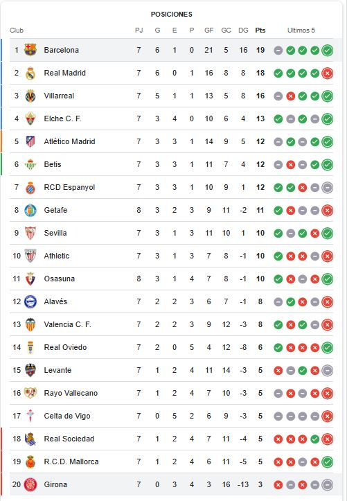
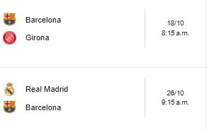
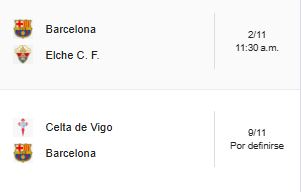

Calendario – FC Barcelona
Tabla de posiciones LA LIGA 2025/26
Actualmente el FC. Barcelona se encuentra en primer lugar.

Próximos encuentros del FC BARCELONA


Tabla de posiciones de UCL
Actualmente el FC. Barcelona se encuentra en décimo-sexto lugar.